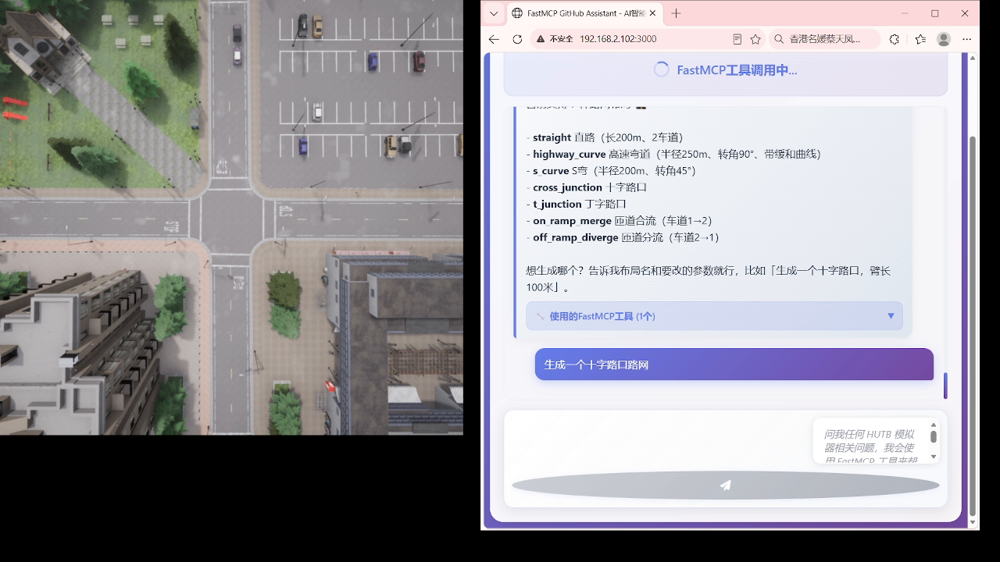
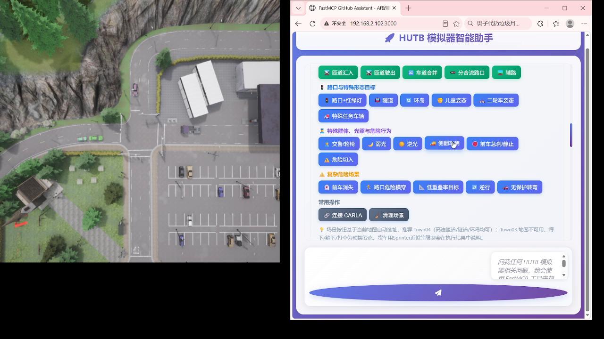
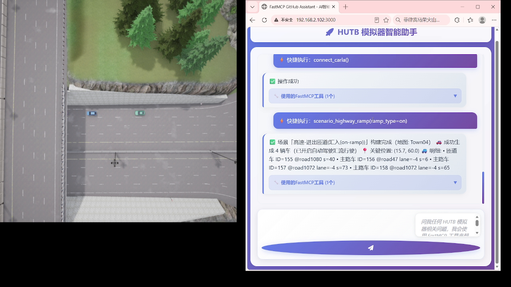
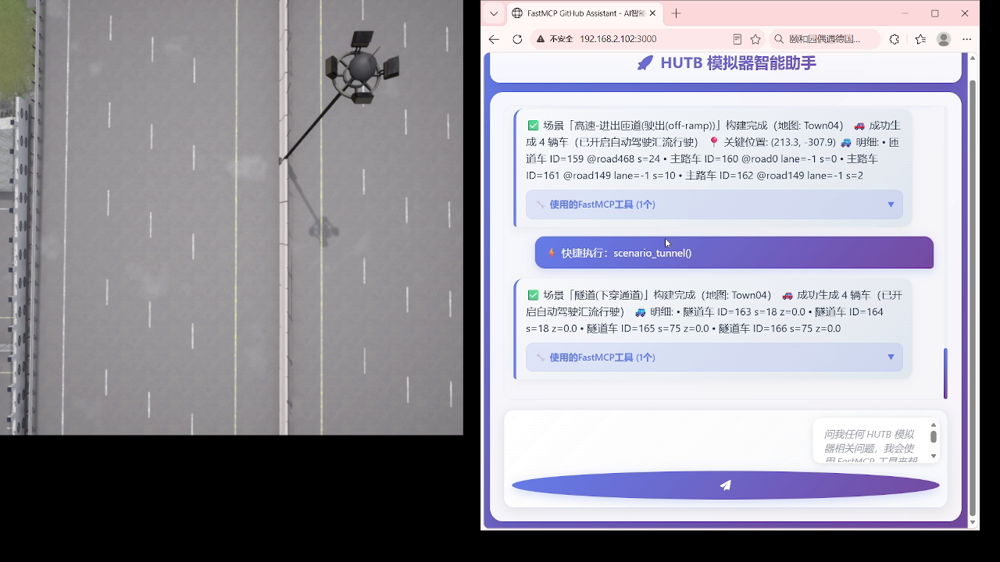
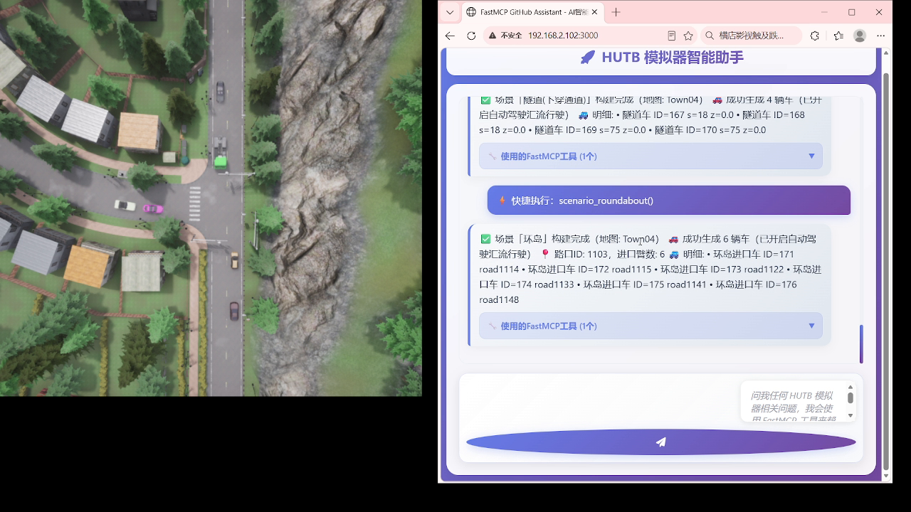
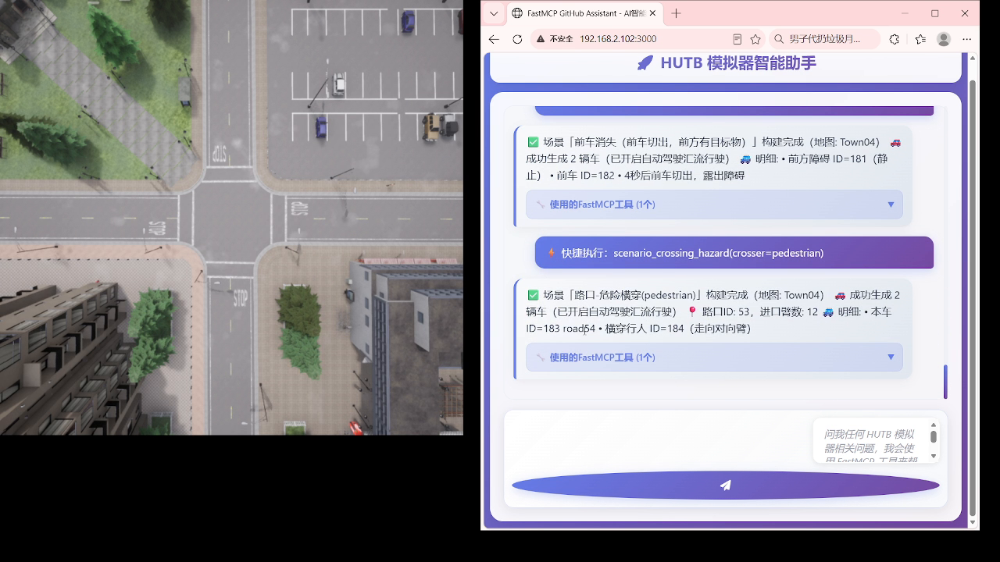
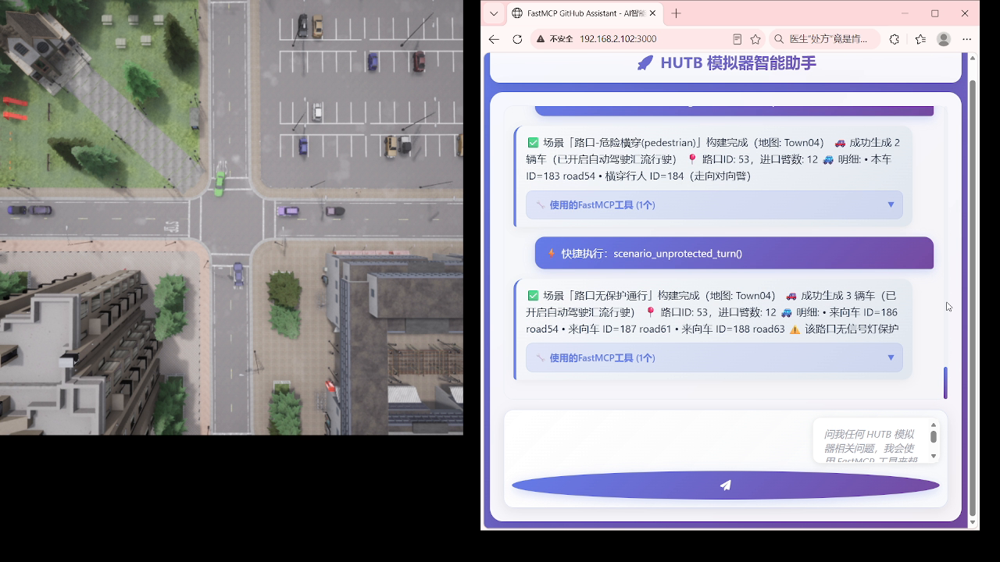
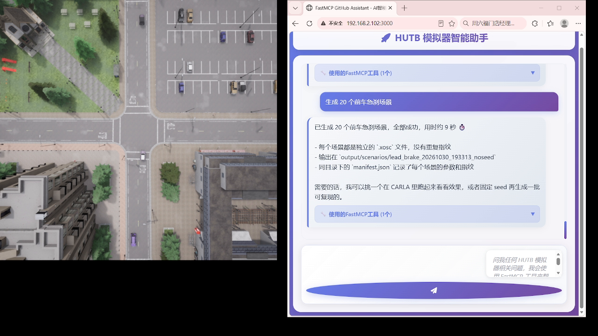
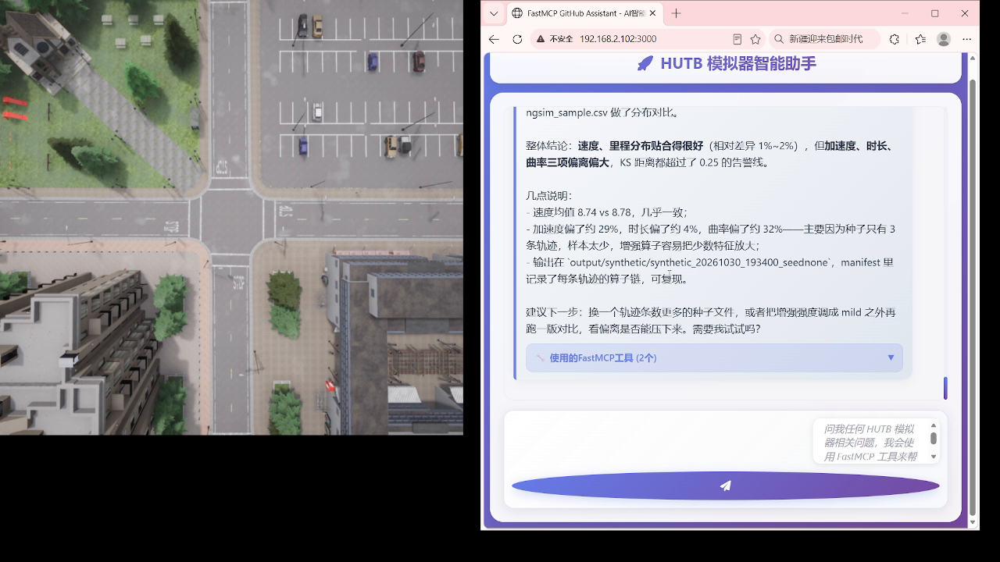

HUTB MCP 实现原理
本页说明 MCP 智能助手的实现原理：分层架构、MCP 协议与 FastMCP 框架的关系、核心组件职责， 以及代码组织方式。具体功能用法见 场景生成、路网生成、CARLA 执行。
1. 整体架构
系统分为四层：人机界面、FastMCP 工具层、模拟器 API 客户端、大模型服务。 用户的一句话请求，最终被拆解成若干个对 HUTB 模拟器 API 的确定性调用。
main_ai.py] C --> D[CarlaClient
HUTB 模拟器 API] C --> E[Deepseek AI
大模型推理] C --> F[FastAPI Web 界面
127.0.0.1:3000] style B fill:#e1f5fe style C fill:#ccffcc style D fill:#fff3e0 style E fill:#f3e5f5 style F fill:#e8f5e9
一次对话的调用时序：
设计上有意把大模型负责理解意图、工具负责确定性执行这两件事分开： 大模型只做参数填充和工具选择，真正的几何计算、文件生成、CARLA 调用全部由代码完成， 因此同样的输入可以得到可复现的结果。
2. MCP 协议与 FastMCP
MCP（Model Context Protocol）解决的是"大模型如何知道有哪些工具可用"。 传统做法需要手写 JSON Schema 描述每个工具的参数类型、枚举值与必填项，工作量大且容易与实现脱节。
FastMCP 在 MCP 之上用装饰器做了封装，开发者只需要：
- 写一个普通的 Python 函数；
- 加
@mcp.tool()装饰器； - 用类型注解（
str/int/Optional[str]/Literal[...]）和 docstring 描述参数。
from fastmcp import FastMCP
mcp = FastMCP("HUTB 智能助手")
@mcp.tool()
def generate_scenario_from_template(template: str, count: int = 1, seed: int = 0) -> str:
"""按模板批量生成 .xosc 场景。
Args:
template: 场景模板名，如 lead_brake / cut_in / crossing_hazard
count: 生成数量
seed: 随机种子，相同种子结果可复现
"""
...
FastMCP 自动完成的工作：
| 自动处理项 | 说明 |
|---|---|
| 工具注册 | 扫描所有 @mcp.tool() 函数并收集元数据 |
| JSON Schema | 由类型注解生成 MCP 协议所需的参数描述 |
| 请求路由 | 收到 tool_call 后分发到对应函数 |
| 错误处理 | 捕获异常并返回结构化错误，供大模型决定是否重试 |
| 结果格式化 | 返回值序列化为大模型可读文本 |
3. 核心组件
3.1 CarlaClient —— 模拟器 API 封装
CarlaClient 封装所有对 HUTB 模拟器的 RPC 调用，内部维护三个状态：
| 属性 | 作用 |
|---|---|
self.client |
carla.Client(host, port)，底层 RPC 客户端，超时 5 s |
self.world |
世界对象，用于生成/销毁 actor、设置天气、加载地图 |
self.actors |
当前会话生成的 actor 列表，便于统一清理 |
所有方法遵循"连接 → 执行 → 返回"三段式，避免长连接持有已失效的世界对象：
class CarlaClient:
def connect(self, host="localhost", port=2000):
self.client = carla.Client(host, port)
self.client.set_timeout(5.0)
self.world = self.client.get_world()
def spawn_vehicle(self, blueprint_id="vehicle.tesla.model3", ...):
...
端口约定
CARLA 默认 RPC 端口为 2000。若启动时使用 -carla-port=<port>，客户端需对应修改。
3.2 FastAPI Web 界面
main_ai.py 同时启动一个 FastAPI 服务（默认 127.0.0.1:3000）：
| 路由 | 用途 |
|---|---|
GET / |
对话页面 |
POST /chat |
对话接口，大模型走完整工具调用流程 |
POST /tool |
直接调用指定工具，供网页快捷按钮使用，不经过大模型 |
GET /health |
健康探测，mcp.bat 启动时轮询判断服务是否就绪 |
快捷按钮走 /tool 而不是 /chat，是为了让场景构建这类固定操作跳过推理延迟，结果也更确定。
3.3 环境配置
| 变量 | 用途 |
|---|---|
DEEPSEEK_API_KEY |
大模型推理（必填） |
CARLA_HOST |
模拟器地址，默认 localhost |
CARLA_PORT |
模拟器 RPC 端口，默认 2000 |
WEB_PORT |
Web 界面端口，默认 3000 |
安装与启动步骤见 环境配置。
4. 代码组织
4.1 仓库结构
OpenHUTB/mcp/
├── mcp.bat # Windows 一键启动（依赖检查 → 启动 CARLA → 启动服务 → 开浏览器）
├── mkdocs.yml # 本文档站配置
├── docs/ # 文档源文件（本页所在目录）
├── llm/
│ ├── main_ai.py # 核心：CarlaClient + FastMCP 工具 + FastAPI Web
│ ├── README.md # 大模型接入说明
│ ├── check_opencv.py
│ └── src/ # 配置、日志、辅助客户端
├── model/ # 人形机器人模拟环境
├── sim/ # PR2 机器人仿真集成
└── sumo/ # SUMO 相关脚本
4.2 main_ai.py 分区
| 区块 | 职责 |
|---|---|
| 导入与路径设置 | carla / fastmcp / fastapi / aiohttp 等 |
CarlaClient |
模拟器 API 封装（连接、生成、天气、视角、录制） |
| 场景与路网生成 | .xosc 模板渲染、.xodr 生成、校验 |
| FastMCP 工具定义 | 每个 @mcp.tool() 对应一项能力 |
| FastAPI 路由 | Web 页面、/chat、/tool、/health |
| 启动入口 | 解析命令行参数并启动对应服务模式 |
4.3 工具分类
| 类别 | 代表工具 | 文档 |
|---|---|---|
| 场景生成 | generate_scenario_from_template、list_scenario_templates、validate_scenario |
场景生成 |
| 路网生成 | generate_rich_xodr、list_road_layouts |
路网生成 |
| CARLA 执行 | run_scenario_in_carla、run_road_in_carla、list_carla_maps |
CARLA 执行 |
| 轨迹合成 | import_trajectory、synthesize_trajectory_dataset、compare_trajectory_distribution |
轨迹合成 |
| SUMO 导出 | export_sumo_demand |
轨迹合成 |
| 基础操作 | connect_server、set_weather、spawn_vehicle、switch_view、clean_scene |
见对话示例 |
5. 运行效果
以下截图来自实际运行，左侧为 CARLA 俯视画面，右侧为 Web 对话界面。
5.1 对话与快捷操作
大模型理解自然语言后列出支持的路网类型，参数确认后才执行：

Web 界面顶部的快捷按钮面板，点击即直接执行对应场景，无需输入文字：

连接 CARLA 后一键构建匝道汇入场景：

5.2 场景与路网
匝道驶出与隧道：

隧道与环岛：

前车消失与路口危险横穿：

路口危险横穿与无保护转弯（返回本车、进口数、横穿行人 ID 等完整信息）：

批量生成 20 个前车急刹场景，输出 .xosc 并附 manifest.json 记录每个场景参数：

5.3 数据分析
MCP 工具不局限于模拟器操作，也可用于结果分析，例如对轨迹文件做分布对比：

更多 CARLA 渲染效果见 效果展示。
6. 已知限制
工具在无法完成时会返回明确提示，不会静默失败。完整的指标与边界见 实测数据与限制。
| 限制 | 说明 |
|---|---|
| 无蓝图实体 | 婴儿车、配送物流车、动物、施工车辆等在蓝图库中不存在 |
| 硬摆姿态 | 蹲下/躺下/打伞用 set_transform 直接设位姿，无对应动画 |
| 隧道检测 | 检测目标为桥下/下穿通道，官方地图无地质下沉隧道 |
| 运行时切图 | 会话中使用过自动驾驶后，需用目标地图重启 CARLA 再连接 |
| 地图选择 | 隧道/环岛推荐 Town04；Town03 地图包加载即崩溃，已禁用 |